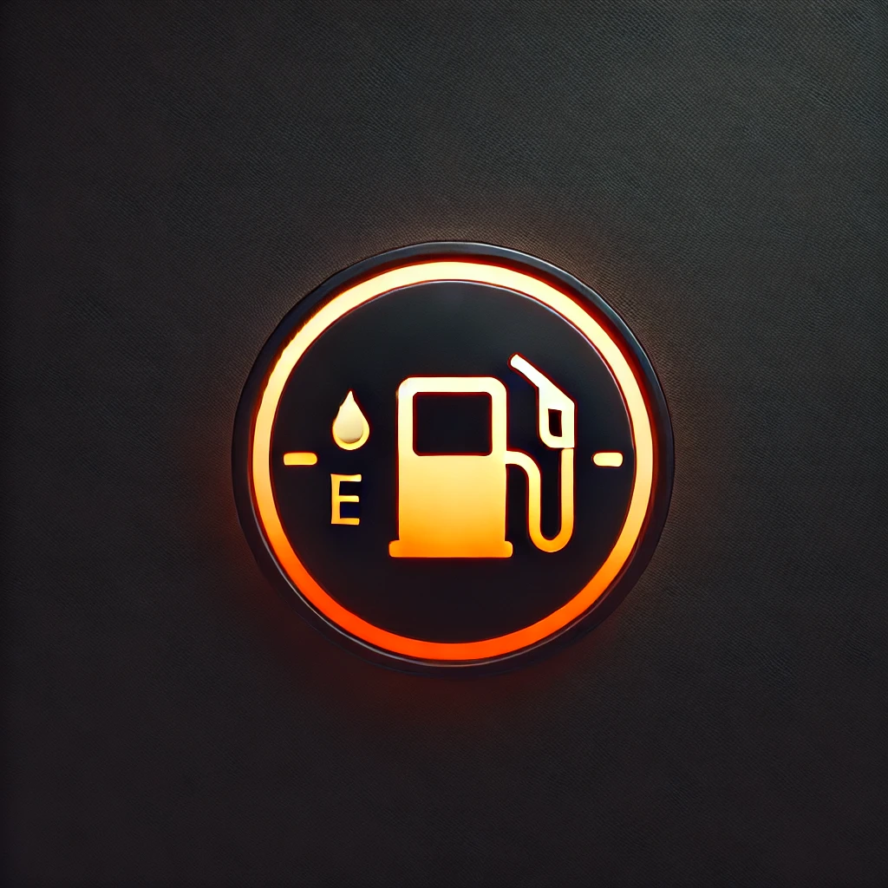

<!DOCTYPE html>
<html lang="en">

<head>
    <meta charset="UTF-8">
    <meta name="viewport" content="width=device-width, initial-scale=1.0">
    <title>Ap38</title>
    <style>
        div img {
            width: 100px;
            height: 100px;
        }

        div p {
            color: orange;
            font-size: 30px;
        }
        
        #avertizare2{
            color: red;
            font-size: 30px;
        }

    </style>
</head>

<body>
    <script>
        window.alert("Va rog alimentati: ")
        let fuel;
        fuel = +window.prompt("Litri: ")

        do{
            if ( fuel > 0)
            {
                fuel--
            }

            if( fuel < 10 && fuel >= 1 ){
                document.write("<div><p>Va rog sa alimentati</p></div>")
            } 

            if (fuel < 1)
                
                {
                    document.write("<p id='avertizare2'> Ati ramas fara combustibil. Trebuie sa ne oprim</p>")
                    break
                }
            

           

        }while(fuel > 0)


        
        
    </script>
</body>

</html>

<!-- 9. Să se progrmaeze un senzor care determina cantitatea de carburant aflată în rezervor. Dacă cantitatea de combustibil
scade sub 10 litri să afiseze un mesaj de avertizare cu portocaliu: "Va rog sa alimentati!“. Dacă cantitatea de
combustibil este < 1 să afișeze cu roșu mesajul :"Ati ramas fara combustibil. Trebuie sa ne oprim!“ -->